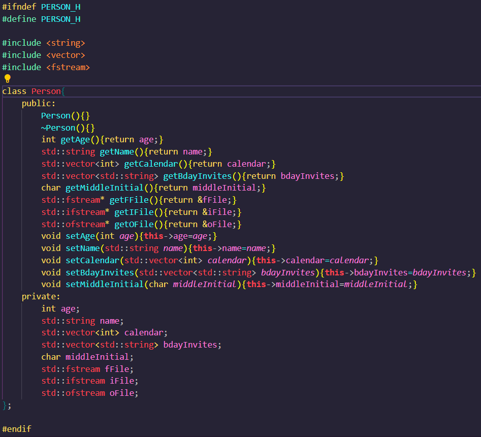
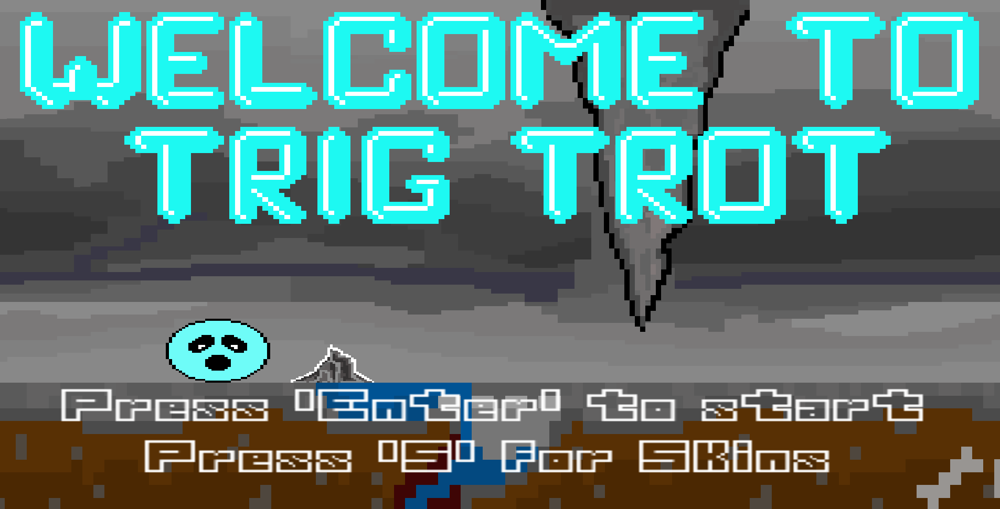
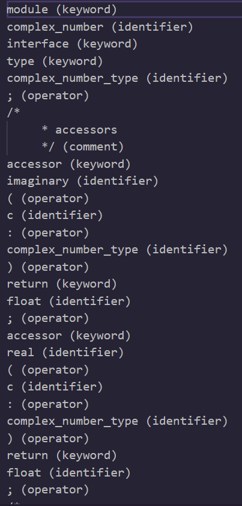
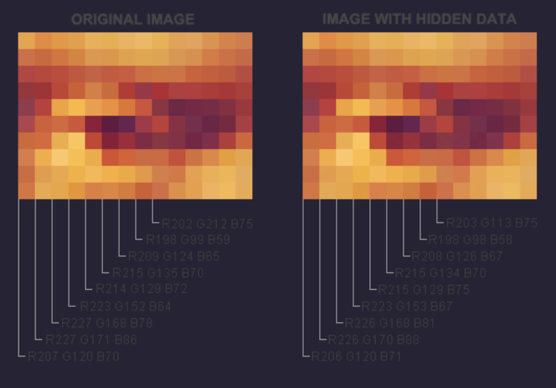
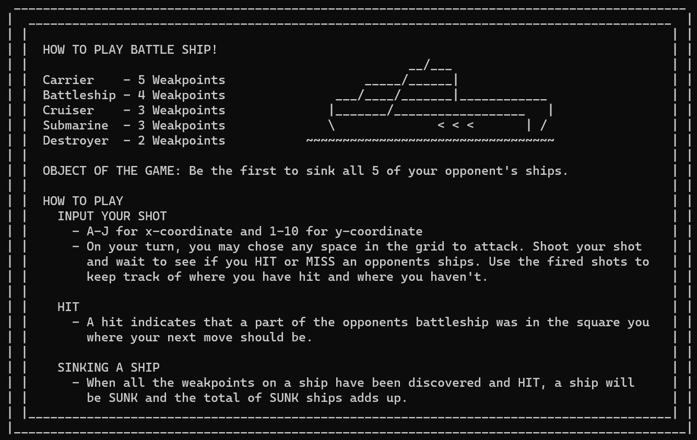

Hello there! I'm Aaron Jarnes, a passionate programmer with a love for the thrill of snowboarding.
As I navigate the exciting world of technology, my days are filled with lines of code and adrenaline-pumping slopes.
By day, I take on the role of a manager at Arby's, bringing a mix of technical prowess and managerial
finesse to the fast-paced environment. It's a delicious blend of my leadership skills and my appetite for innovation.
Outside the digital realm, you'll find me carving through snow-covered mountains, chasing the perfect line on
my snowboard. The rush of wind and the crisp mountain air fuel my adventurous spirit.
🎻 Cello Virtuoso: 7 Years of Musical Mastery
For seven years, I've immersed myself in the world of cello, creating beautiful melodies and honing my musical craft. The resonance of strings echoes alongside my journey through various achievements.
🚀 Fast-Track to Management Excellence
Ascending the professional ladder at an accelerated pace, I've carved my path to managerial success. Leadership, strategy, and a relentless drive have propelled me into a dynamic role at Arby's, where I bring innovation to the forefront.
💻 Computer Science Tutor and Scholar
Beyond managing the daily operations, I dedicate my time to sharing knowledge as a computer science tutor. A testament to my commitment, I consistently earn A's in computer science classes, showcasing both my academic prowess and my ability to impart wisdom.
🖥️ Project Architect and Programmer Extraordinaire
My passion for programming extends beyond academia. I am the architect behind various projects, each line of code a brushstroke on the canvas of innovation. These projects not only demonstrate my technical proficiency but also reflect my creativity and problem-solving acumen.
🌟 An Ongoing Symphony of Success
As I celebrate one year of accomplishments, I look forward to the harmonious blend of my skills, whether resonating through cello strings, navigating managerial challenges, tutoring aspiring minds, or crafting cutting-edge programs. Here's to the ongoing symphony of success!
Language: C++
This program will let you create any class with a limited number of variable typings.
This does not include namespace std so your project will be as optimized as you'd like it.
This class builder makes getter and setter functions all in the header for you. No extra assembly required.
Just run the program, include it into your libraries, and enjoy easy coding!

Language: C++
This is a group project to create a game using the SFML library. The game we created is called TrigTrot.
A clever play on words from the game's inspiration: Geometry Dash. Trig Trot is an infinite size scroller
where you have to dodge incoming spikes. Equpped with music, skins, title and end screen, this game shows
what a few peolpe can do in a short amount of time.

Language: C
The lexical analyzer takes a text file as input. It then parses out the file in tokens.
Those tokens are checked character by character to determine what they represent in each line of code.
The lexer can determine if you are using a keyword, identifier, comment, strings, numbers, and much more.
It creates an output file to write the lexer's findings. Equipped with error fuctionality, this program
specializes in using system read and write functions.

Language: C++
Steganography is the artform of encoding a hidden message into pictures. This program works on the BMP file
structure. It takes a file as input and encodes a hidden message into it. You can also input a file and decode
the message in it. This plays off the fact that each pixel changes by 1 bit to represent binary. That binary
is translated into characters then strings to formulate a hidden encoded message.

Language: C++
Battle Ship was a group project designed to help us get used to working in github with multiple people.
The game is very simple to learn, if you don't know how to play, there is a how to play screen.
The game uses random chance to determine who goes first then the gameloop is off.
Showcasing strategy and patience, our computer bot will have you wondering "Why didn't I win?".
